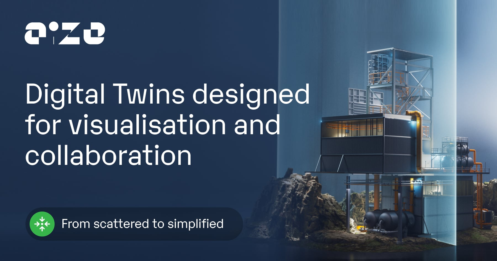

Map the access flow
Trace login, SSO, MFA, permissions, customer tenants, and third-party links across portal and backend services.
Saw Aize is hiring a senior IAM engineer. The role looks close to the product: C#/.NET services, React flows, portal links, Terraform, CI/CD, SSO, and MFA.

The IAM role says Aize is making access a core product flow. It is not only internal security work. Your users include operators, contractors, vendors, and partners across many assets. If the IAM backlog waits for one perfect hire, onboarding and release work can slow down. That can also raise support load for customer admins.
We would add a dedicated bridge squad under Luis or Aize's PM. The first pilot runs eight weeks, with weekly demos and a clear handover.
Trace login, SSO, MFA, permissions, customer tenants, and third-party links across portal and backend services.
Build a selected IAM backlog item in C#/.NET, with React changes where the user path needs them.
Review Terraform, CI checks, secrets handling, and rollback notes before each identity-related release moves forward.
Deliver tests, runbooks, threat notes, and demo results so the permanent IAM hire starts with context.

C#, Angular, SQL, and dedicated industrial teams.
MES ROI reached up to 400% for users.
Read case study
Compliance checks, live tracking, and clear reports.
Reduced infrastructure risk at controlled cost.
Read case study